Insights in enzyme modification for renewable solar hydrogen
Isaac T Yonemoto, Philip Weyman
J. Craig Venter Institute
A Little Bit of Basic Biology
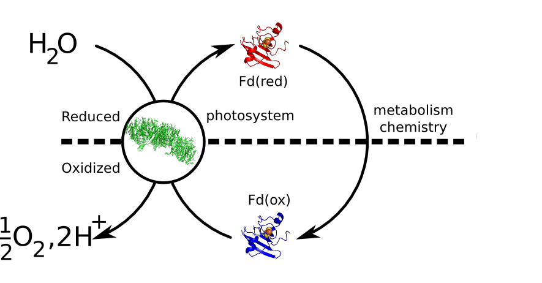
Conventional Biofuels are Steppy
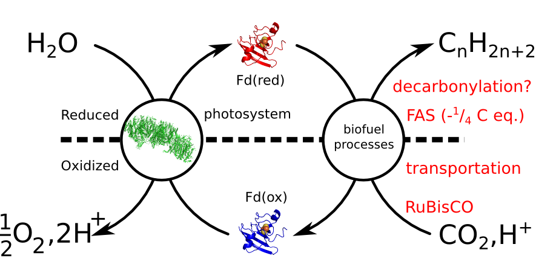
Intercept Electrons at the Source
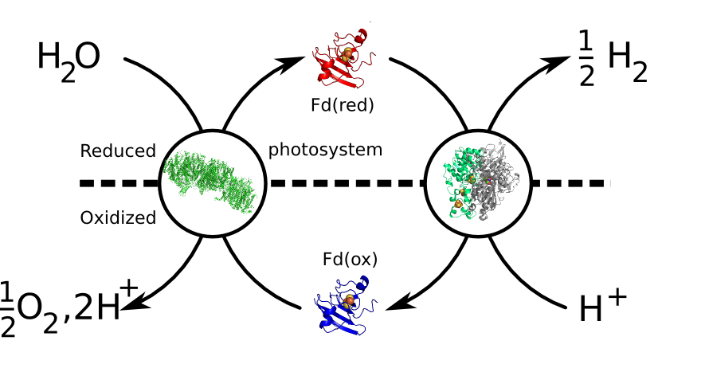
GOS identified the Alteromonas "Uptake" Hydrogenase
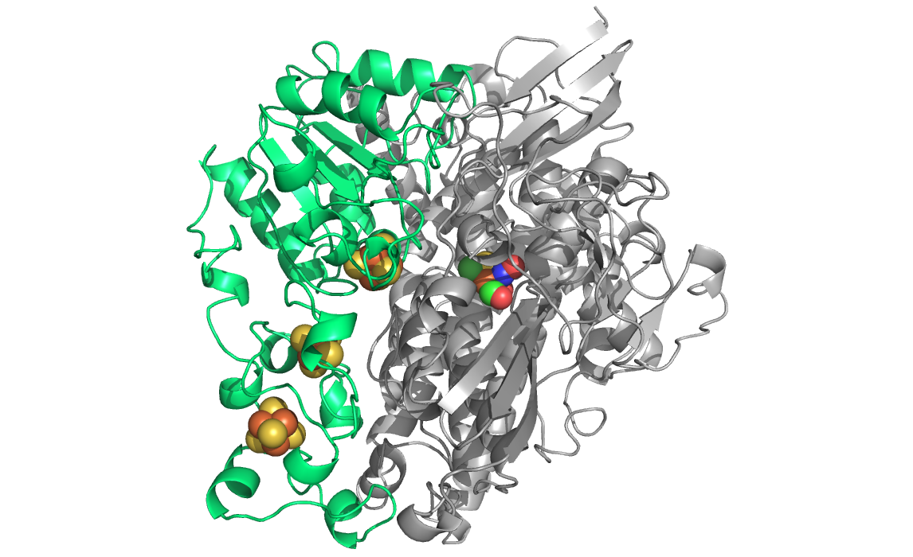
[NiFe] Hydrogenase Features a Complex Organometallic Active Site
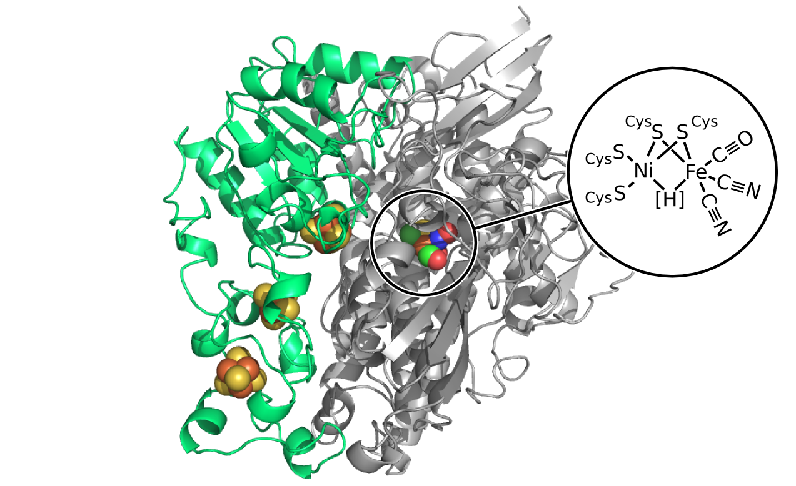
Our Studies Focus on the Fe-S Clusters Carrying Electrons to the Active Site
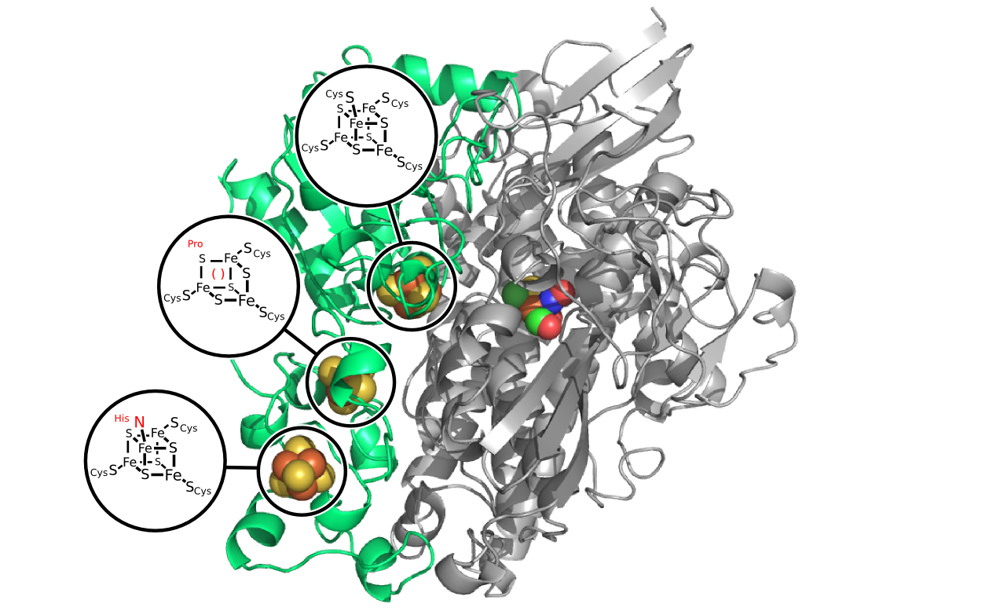
Recap on Fe-S Clusters
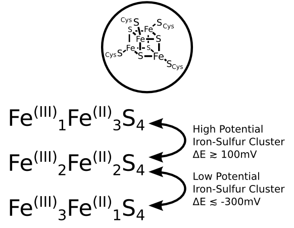
Initial Modifications to Hydrogenase Small Subunit
Altermonas Hydrogenase Oxidizes Hydrogen
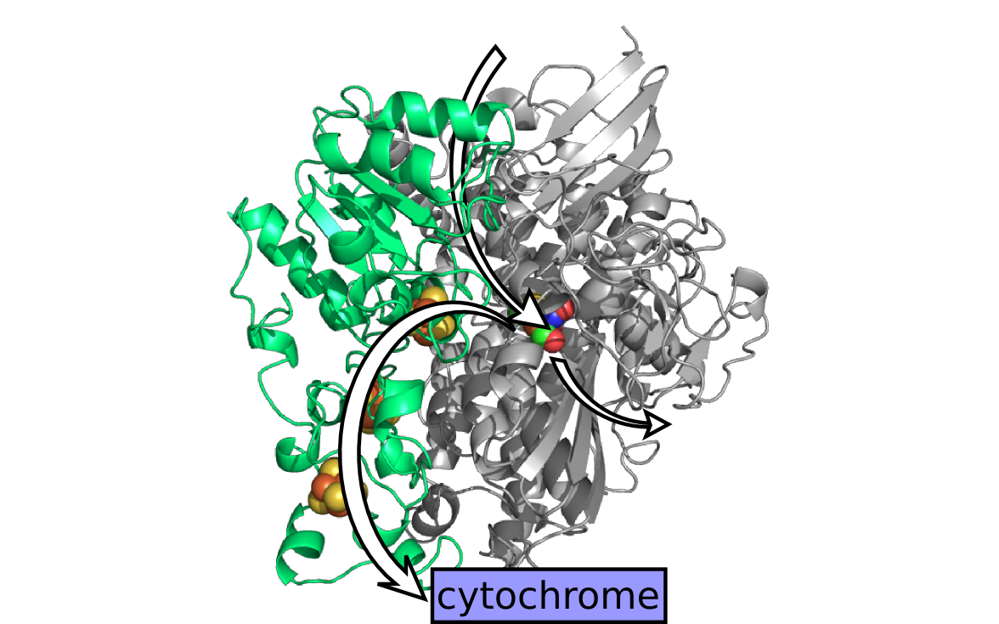
Can Altermonas Hydrogenase Reduce Proton?
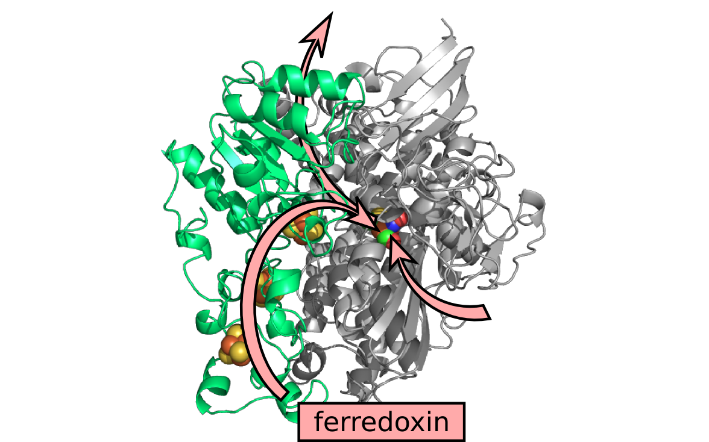
Previous Literature Suggested Amino Acid Substitutions
| Species |
Substitution |
Oxidation Effect |
Reduction Effect |
|
| D. fructosovorans |
Medial
Pro to Cys |
-38% |
+60%[1] |
|
| D. fructosovorans |
Distal
His to Cys |
-98.7% |
-53%[2] |
Crude Thought Model Suggests a Mechanism
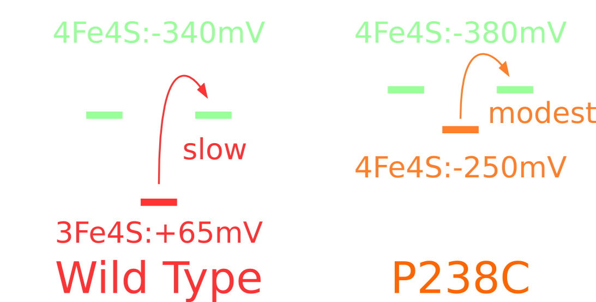
Hydrogen is produced using a simple in vitro assay
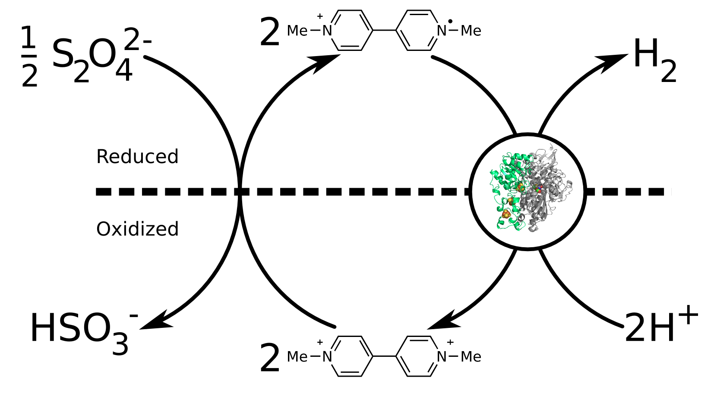
Neither Homologous Substitution Improved Activity
Combining Substitutions Improved Activity
How Else Can we Play with Electron Transport?
Can Tweaking the Midpoint Potentials Help?
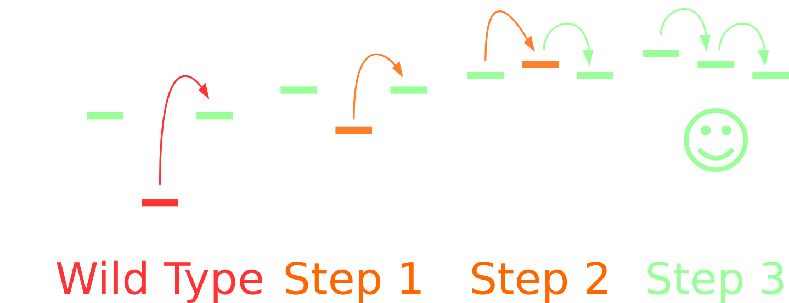
Literature Precedent for "Strange" Fe-S Clusters
| Species |
Location |
Substitution |
|
| M. barkeri |
Proximal 1 |
Cys to Asp |
|
| G. metallireducens |
Proximal 2 |
Cys to Asp |
|
| N. punctiforme |
Proximal 2 |
Cys to Asn |
|
| N. punctiforme |
Distal 1 |
His to Gln |
|
| [NiFeSe] hydrogenases |
Medial 2 |
Pro to Cys |
We Screened 48 Substitutions of Fe-S ligating Cysteines
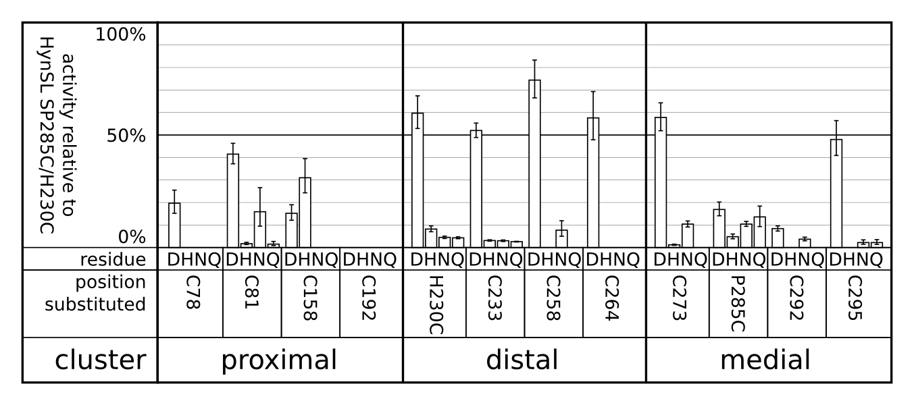
"Native-like" Substitutions are All Functional
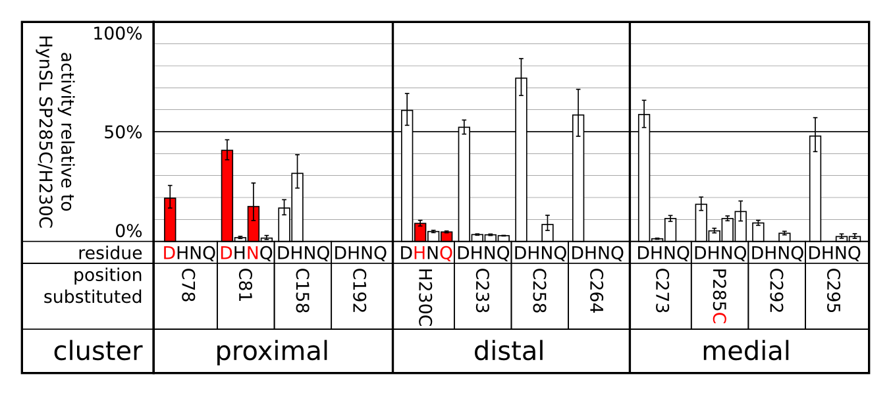
Aspartic Acid Substitutions are Generally Well-Tolerated
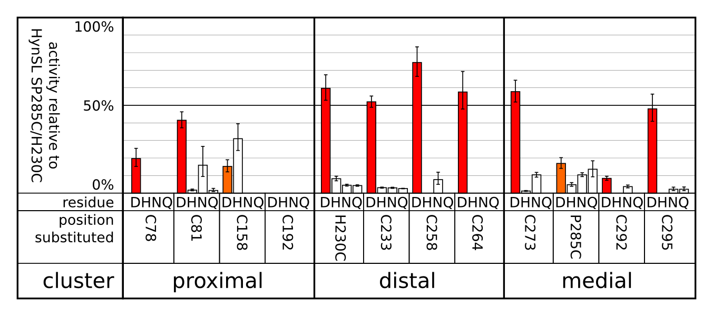
...And Some of them Outperform the Wild-Type Enzyme
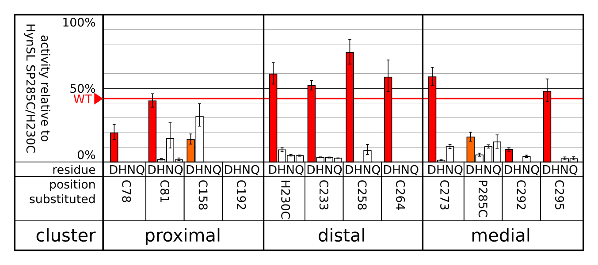
Conclusions and Future Directions
- We can make Alteromonas hydrogenase better
- We have a library of 48 variants with varying activity
- We're working towards understanding why the enzyme has a bias
- Hydrogenase may be a good platform for putting Marcus Theory to rigorous test
Acknowledgement
- Philip Weyman
- Hamilton O Smith
- Pin-Ching Maness
- Ben Clarkson
Funding
Department of Energy Fuel Cells Office
DE-FG36-05GO15027